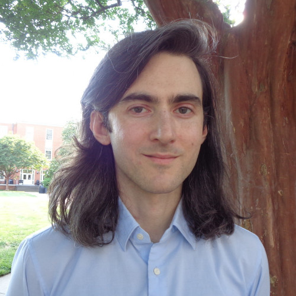

Michael Cerchia

Email: mcerchi@emory.edu
Office: W431 Math and Science Center
Department of Mathematics
Emory University
I am a fifth-year PhD student at Emory University working with David Zureick-Brown.
I am broadly interested in algebraic geometry and number theory, with specific interests in the arithmetic of moduli spaces, stacks, and modular curves.
My CV.
Papers and Projects
In Progress: The canonical ring of the moduli space of abelian varieties for genus up to 6
In Progress: Sporadic quartic torsion, with Alexis Newton
Section rings of Q-divisors on genus 1 curves arxiv, with Jesse Franklin and Evan O'Dorney, 2023
Uniform bounds on the image of the arboreal Galois representations attached to non-CM elliptic curves arxiv, with Jeremy Rouse, Proceedings of the American Mathematical Society, 2021
Teaching
I am not teaching in Fall 2023. In Fall 2021 and Spring 2022, I taught Math 111 (Calculus 1).
I have also been involved in the Emory Math Circle as an instructor for the High School A class in the 2019-2020 year and as an assistant in later years.
Seminars
In Fall 2021 and Spring 2022, I organized a seminar on automorphic forms in preparation for the Arizona Winter School.
Other
In Summer 2023, I was an intern at MinedXai, where I developed a forex forecasting platform using tools from topological data analysis.
|